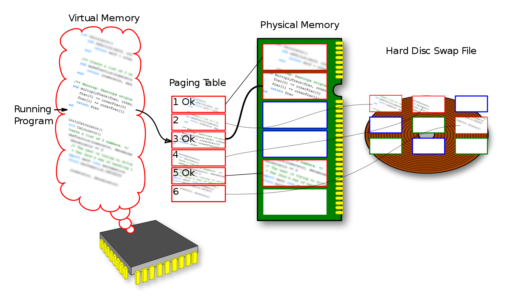

Introduccion a los Compiladores
Resumen historico de las maquinas que dieron paso a los compiladores
 Iniciemos
Iniciemos
Iniciemos
Iniciemos
El comienzo de la era tecnologica.

Para los inicios el principal componente que permitia los calculos rapidos era el abaco, donde permitia hacer secuencias de conteo entre 0-9, 10-90, 100-900, 1000-9000. Agregandose mas componentes con el tiempo.

En poco tiempo dejaba de ser eficiente la manera de poder calcular con el abaco y se abrio paso a un mundo mas avanzado que requeria automatizacion en los calculos. Se comenzaron a diseñar las primeras maquinas que pudieran realizar calculos matematicos.
La logica booleana viene a dar el paso a las reacciones de verdadero y falso, logica de comprension de "Si" o "No", facilita el calculo de acciones con respecto al funcionamiento de los componentes o inclusive la forma de interactuar con el ambiente, para ello se manejan 3 fundamentos que se conocen como puertas logicas que vienen a representar "NOT", "AND", "OR"
Con el manejo de las puertas logicas se llego a un nivel de comprension para lograr que las amquinas lograran interpretar estas decisiones, siguiendo el fundamento de logica "Si" o "No", se determino que la logica booleana funcionaria bajo dos valores "0" y "1", siendo estos la representacion de "0: Off - Falso" y "1: On - Verdadero", actualmente bien llamados bits.
El almacen de los calculos binarios.
Para mantener los calculos creados en base a la logica booleana y sus valores binarias se empleo un componente que lograra mantener guardada la informacion de dichos calculos de manera temporal, dicho componente viene a ser la "Memoria", dicha RAM funciona con 16 ubaciones de memoria cada una conteniendo 8-bits, funciona con un proceso de 4 registros de 8-bits que guardan de manera temporal la informacion.
Unidad Central de Procesamiento.
Como bien se ha mencionado la RAM se refiere a la memoria donde se almacena de forma temporal informacion recopilada, para acceder a esa informacion se requiere manejar una serie de instrucciones usando registros de control, para esto se hace uso de las unidades de control que recopilen informacion de los sectores de la ram donde haya informacion que se desee manejar
No es magia. Es la ciencia del computo.
Empezando como tarjetas perforadas que contenian patrones que poco a poco fueron cambiando hasta manejar las primeras señales de la programacion o comunicacion manual con el computador. Avanzando a un tiempo mas moderno en el que surgio la computadora con alimentacion electrica se fueron desarrollado programas que lograran dar informacion relevante pero dada la capacidad estas demoraba posiblemente hasta semanas en poder obtener informacion especifica, con este inconveniente se comenzo a trabajar en los programas dentro de la propia memoria de los computadores (STORE-PROGRAM COMPUTERS). Dichos programas luego se encargarian de decodificar los mensajes en las tarjetas perforadas llevandolas a un punto de automatizacion que evite la perdida de informacion. Aun con los avanzas se requeria completa experiencia para el manejo de los programas ya que debia conocerce completamente el funcionamiento de hardware, con esto se fue pensando en una forma que el programa pudiera interactuar directamente con el hardware y pudiera transmitirse de manera mas sencilla la informacion, es lo que se conoce como Lenguajes de Programacion.
Los computadores tienen su propio lenguaje de comunicacion y la idea de poder recrear programas en lo que se pueda interactuar con ellos es comunicarse directamente usando el mismo lenguaje, iniciando los programas se crearon programas en "Pseudo-code" (las instrucciones logicas) hasta avanzar al "Machine Code" (el lenguaje entendido por la maquina). Los programas se fueron creando en binario y se fueron ensamblando los mensajes en binario por igual estos programas fueron creados en ASSEMBLY. El primer compilador en 1952 A-0 System convertía la especificación en código máquina que podía ser alimentado a una computadora para ejecutar el programa. de manera que el computador pueda entender las instrucciones.